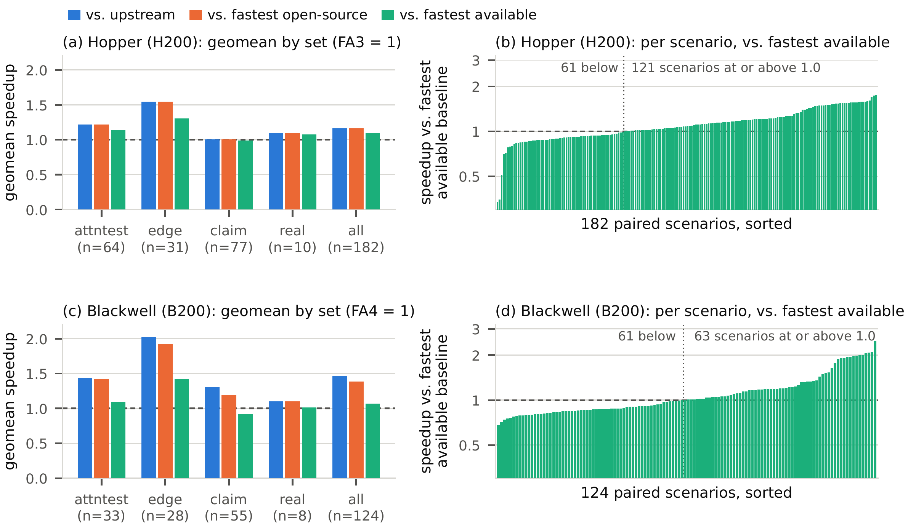
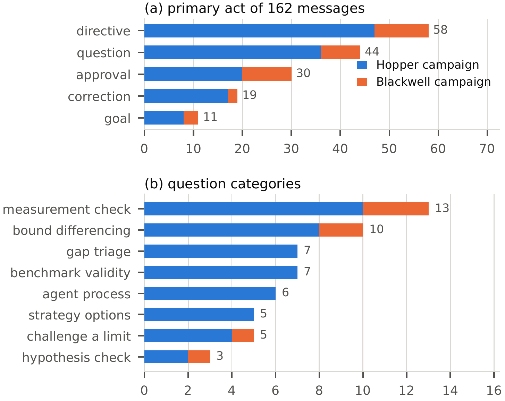
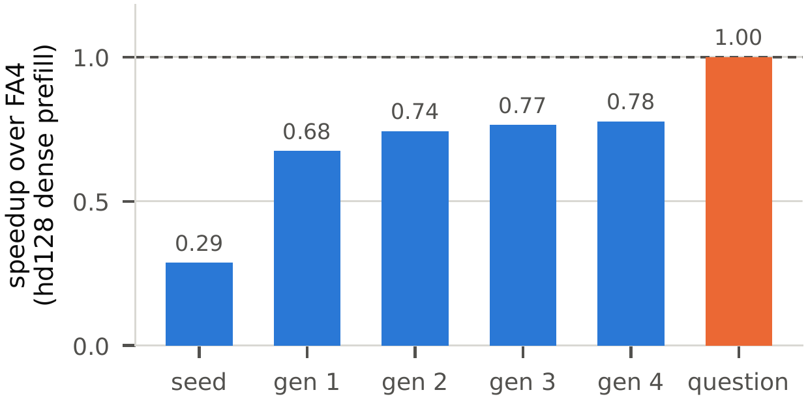

LLM agents for GPU kernel optimization sit at two ends of a structure–freedom tradeoff. Scripted agents fix what the model does at each step, via a learned policy, an optimization menu, or fixed roles, and are sample-efficient where the recipe applies and stall where it does not. Open-ended agents let a self-directed model mutate a population of kernels and pay for the freedom in trials: thousands of evaluations, repeated edits, and wrong candidates. Both respond to hard targets by equipping the agent with more: parsed profiler output, disassembly analysis, retrieval over documentation and libraries, and stores of lessons.
We argue that both lack direction, a hypothesis about where the remaining gap is, and that a short question asked at the right moment supplies it without narrowing what the agent may do next. We present KernelSeek, a question-driven agent that makes an existing CUDA kernel faster with no operator-specific knowledge and no faster implementation to imitate: a general-purpose coding agent, a minimal harness that enforces a verifiable goal, and questions at decision points, first from a human, then from a bank the agent applies to itself.
On the same task, evaluator, hardware, and week, a tool-rich autonomous agent built in the prevailing style plateaued at 0.50× FlashAttention-3 after 133 model-driven steps; KernelSeek reached 1.13×. It then produced dependency-free FlashAttention forward kernels for Hopper and Blackwell, single CUDA files with no CUTLASS, CuTe, cuBLAS, or cuDNN, correct on all 182 scenarios per architecture and 1.16× FlashAttention-3 and 1.46× FlashAttention-4 (geometric mean). Across 162 human messages and 11.5K agent tool calls, every large gain followed a question that moved the agent to a different layer of the system or rejected a claimed limit, never one that supplied information. We release the kernels, harness, question bank, and all traces.
Kernel optimization by an agent is a search. A candidate is a kernel source, its fitness is a vector of per-scenario speedups (zero if any scenario is incorrect), and the agent is the variation operator: it proposes the next candidate conditioned on a context. Everything a designer can do is a choice of what enters that context and when.
The designer improves it by adding tools and knowledge.
The designer improves it by asking better questions.
“Make this faster” is open-ended, and the model answers it greedily. “Is the baseline winning on kernel cycles or only on wall-clock?” is bounded, and to answer it the model will tear out and rewrite a part of the kernel it would never touch on its own. A well-placed question supplies direction without narrowing what the agent may do next, which neither more structure, more freedom, nor more tooling can.
KernelSeek takes a working CUDA kernel, a set of scenarios, and a goal, and returns a faster kernel whose outputs match the seed on every scenario. Nothing in the method is specific to an operator, and nothing requires a faster implementation to exist.
The only purpose-built component. One command builds a candidate, checks its outputs against the seed's and an fp32 reference on every scenario, and times it against the seed back to back on the same GPU. Constraints are enforced mechanically: the ban on CUTLASS, CuTe, cuBLAS, and cuDNN is checked on the built binary's symbols.
The goal is a predicate over the evaluator's output, installed as a Stop hook: whenever the agent tries to end its turn, unmet clauses send it back to work. Predicates quantify over every scenario, not an aggregate, and are computed, never judged by a model. The hook returned the agent to work 59 times.
At the start of a campaign, at a plateau, when the agent claims a limit or completion, after a suspiciously large win, and when correctness breaks in a way the agent explains away. In between the agent works alone, about 71 tool calls per human message. The steerer contributes no code; it contributes doubt, at the right moment, about the right thing.
Recurring questions harden into a bank of 101 core entries in ten groups, ordered by where the gap might be, plus per-architecture checklists and an operator plug-in. Packaged as a skill, the agent asks them of itself and fans out one subagent per hypothesis, each returning a measurement rather than a patch.
Across the traces, the questions that preceded the largest gains share six properties:
KernelSeek also composes with evolutionary search: wrapped in an AVO-style monotone lineage, the strategist's directives become questions, hypotheses to test rather than edits to make.
Before KernelSeek we built Arsenal, the agent the prevailing recipe prescribes: a deterministic orchestrator, sixteen hand-written levers keyed to NCU bottleneck labels, retrieval over documentation and DeepGEMM / ThunderKittens / CUTLASS, and a typed knowledge store, with Claude Opus as the brain and no human in the loop. During its first Hopper session, KernelSeek adopted Arsenal's own evaluator: the same 26 configurations, FA3 baseline, and correctness gate, on the same machine, in overlapping days.
| Equipped agent | KernelSeek | |
|---|---|---|
| Human text in prompts | none | 40 messages, 17 questions |
| Model-driven steps / turns | 133 steps | 40 turns |
| Wall-clock to best | 44.7 h of 62.4 h | 68.0 h, 41.3 h active |
| Best geomean vs. FA3 | 0.48× | 1.13× |
| Worst configuration | 0.24× | 0.87× |
| Configurations ≥ 1.0× | 0 / 26 | 22 / 26 |
| Goal met | no | yes |
| Where the effort went | ||
| Reference material pushed into prompt | 37% of prompt | none |
| Tool-result text re-reading own kernel | 82% | 26% |
| Profiler (NCU) runs | 1 per step, parsed | 429, raw |
| SASS / PTX inspections | 1 per step, parsed | 372 |
| Documentation reads | 92 lookups | 36 |
| Builds / benchmark runs | 133 / 133 | 377 / 937 |
| Subagents spawned | 0 | 48 |
Head-to-head on the equipped agent's own evaluator (26 FA3 configurations, H200). Equipped-agent tool use is over its 133 steps; KernelSeek's over all 16 sessions. The questions did not reduce tool use; they aimed it.
Arsenal made all its progress by step 35. The remaining 98 model-driven steps produced nothing beyond noise: its final champion is byte-identical to an earlier candidate and was promoted because one of 54 re-measurements landed above the noise band. Its memory file recorded one configuration as “DEFINITIVE[ly] … walled by [the] 65536-reg file”, a wall FA3 does not hit. Information was not the constraint: with a third of every prompt devoted to reference material, 82% of what it read was its own kernel. Every diagnostic lived at one layer, while the gap KernelSeek later closed on this evaluator was in the host launch path.
Carried through to full campaigns, KernelSeek produced two FlashAttention forward kernels, each a single CUDA file with no CUTLASS, CuTe, cuBLAS, or cuDNN, exposing vLLM's FA3 operator schema so they drop in for upstream. The 182-scenario suites mirror the upstream test grids and add SOL-ExecBench production shapes: bf16, fp16, and fp8; paged and contiguous KV; MHA, GQA, and MQA; causal, sliding-window, softcapped, and attention-sink masking; ragged batches; prefill, chunked prefill, and split-KV decode; and unequal query and value head dimensions.
fa3_hopper.cu — 3.6K lines
Warp-specialized producer and consumer warpgroups connected by a TMA + mbarrier ring, asynchronous
wgmma with setmaxnreg register rebalancing, persistent scheduling with inter-warpgroup
ping-pong, split-KV decode with a combine pass, and a native fp8 path.
fa4_blackwell.cu — 10.2K lines
A kernel family with host-side routing: a persistent warp-specialized collective (two softmax warpgroups in an
ordered ping-pong, a correction warpgroup rescaling the output in tensor memory, one MMA warp driving
tcgen05), variants for unequal head dims and paged prefill, and a two-tile kernel for small,
ragged, and decode shapes.

Case-study results. Left: geomean speedup by scenario set vs. upstream (FA3 / FA4), the fastest open-source implementation (upstream or FlashInfer), and the fastest available (also cuDNN). Right: every paired scenario vs. the fastest available implementation, sorted.
| Set | n | Correct | vs. upstream | vs. open-source | vs. available |
|---|---|---|---|---|---|
| Hopper (H200), upstream = FA3 | |||||
| attntest | 64 | 64/64 | 1.22× | 1.22× | 1.14× |
| edge | 31 | 31/31 | 1.55× | 1.55× | 1.31× |
| claim | 77 | 77/77 | 1.01× | 1.01× | 0.99× |
| real | 10 | 10/10 | 1.10× | 1.10× | 1.08× |
| all | 182 | 182/182 | 1.16× | 1.16× | 1.10× |
| Blackwell (B200), upstream = FA4 | |||||
| attntest | 33 | 52/52 | 1.44× | 1.42× | 1.09× |
| edge | 28 | 31/31 | 2.02× | 1.93× | 1.42× |
| claim | 55 | 61/61 | 1.30× | 1.20× | 0.92× |
| real | 8 | 10/10 | 1.10× | 1.10× | 1.02× |
| all | 124 | 154/154 | 1.46× | 1.39× | 1.07× |
n counts the scenarios the upstream kernel also runs (paired); “Correct” is over runnable scenarios. Speedups are geometric means of wall-clock ratios from byte-identical inputs timed back to back on one GPU with an L2 flush before each sample.
Both kernels are correct on every scenario they run and beat upstream in geometric mean. The headline shrinks as the baseline strengthens: cuDNN is the fastest baseline on 54 of 182 Hopper and 92 of 124 Blackwell scenarios, so the kernels are 1.10× and 1.07× the fastest available implementation. Several decisive gains were outside the kernel bodies: a synchronous host copy costing about 38 μs per call, a stale routing gate, a TMA gather issued from divergent lanes, and ring state the compiler had placed in local memory. Every Blackwell scenario below parity has a measured cause; fp8 inputs and dense head dims ≥ 192 are not yet built on Blackwell (28 of 182 scenarios).
Every large jump followed a question that either moved the agent to a different layer or rejected a claimed limit; none followed a message that supplied information the agent lacked. And the measurement each question triggered was always one the agent could already make. What it lacked was a reason to look.
tcgen05.wait inside a divergent branch.
(a) Primary act of each human message; (b) categories of the questions, by campaign.
Directives are the largest class (36%), followed by questions (27%), approvals, corrections, and goals; 39% of messages are interrogative in phrasing. The steering was interrogative, not mostly questions: directives and approvals keep the agent moving, and the questions are where its course changed. The agent, for its part, asserted a limit or an impossibility 126 times and offered to accept the current state or stop in 24 of the 35 questions it put to the human. Autonomous agents seek closure; the harness and the human refused it.

Questions and evolutionary search on the Blackwell hd128 dense-prefill kernel. Four generations of question-directed evolution, then one question.
The first generation, whose directive asked whether a persistent schedule with longest-first ordering and cross-tile overlap would recover the lost overlap, took the kernel from 0.29× to 0.68×. Three more generations added 0.10× between them, and the search stalled at 0.78× with the kernel's own cycle count already below upstream's. The last 22 points came from a question, not a generation: asked where the time was going, the agent profiled the whole call rather than the kernel and found synchronous host copies. Evolution searched efficiently within the layer it was pointed at; it could not move to a layer it was not pointed at.
A question is admitted only if it carries no answer, is answerable by a measurement with stock tools, is phrased against a bound (a roofline or a per-tile cycle budget) rather than a reference, names an architecture only as a parameter, and names no operator. Beyond the traces, we mined three public GEMM worklogs on Ampere, Hopper, and Blackwell and the FlashAttention-3 and -4 papers for the diagnostic that preceded each optimization. The bank is ordered by where the gap might be:
The release contains both kernels (kernels/fa3_hopper.cu and kernels/fa4_blackwell.cu),
the evaluator, the PTX probes used to validate each Blackwell primitive in isolation, the evolutionary search
scripts, the question bank and skill, and the agent traces. It requires CUDA ≥ 12.3 and a Hopper or Blackwell GPU.
git clone https://github.com/Snowflake-AI-Research/flash-cuda.git
cd flash-cuda
./setup.sh # torch + FA4 CuteDSL baseline + cuDNN frontend
./setup.sh --with-vllm # also install vLLM for the Hopper FA3 baselineThe evaluator compiles the kernel into a torch extension, checks correctness against upstream and an fp32 reference, and benchmarks each scenario against the upstream kernel, scheduling scenarios across every visible GPU:
python -m bench.eval --target hopper # build + correctness + per-scenario speedup
python -m bench.eval --target blackwell
python -m bench.eval --target hopper --no-perf # build + correctness only
python -m bench.eval --target hopper --configs attn_dense_hd128_causal,attn_dense_hd128_fp8The human wrote no kernel code; the agent wrote all 13.8K lines of the two kernels. The messages name measurements, layers, and process rather than mechanisms: of the 63 interrogative ones, 17 mention an attention concept and none prescribes a CUDA construct. The human did have systems expertise and used it to decide which measurement to demand and when; the claim is only that the questions, once asked, are short, generic, and now written down.
No. The harness checks correctness against the seed and an fp32 reference, the goal is a predicate over the seed, and the bank phrases every bound as a roofline or a cycle budget. In the case study the upstream kernel served as a yardstick and as a bound that let a question overturn a claimed ceiling. That second role is the one that mattered, and it is filled without a reference by a roofline, a speed-of-light estimate, a launcher-only A/B, or a kernel for a neighboring shape. The equipped agent had far more reference material in its prompt and gained nothing from it.
Because information was not what was missing. The equipped agent had 37% of every prompt devoted to pre-fetched reference material and 1.6 GB of reference code on disk, yet 82% of what it read through its own tool calls was its own kernel, and its 92 documentation lookups mostly justified not making a change. Its knowledge store hardened conclusions rather than evidence. KernelSeek did not use fewer tools (11.5K tool calls, 429 raw NCU runs, 48 subagents); the questions aimed them.
Task, evaluator, configurations, baseline, correctness gate, hardware, and week are shared, and KernelSeek's 40 human turns are counted in its budget. Three caveats apply: KernelSeek had built a kernel for FA3's 40-scenario test grid in the two preceding days; the front-ends differ and token usage is not recoverable for the Cursor sessions; and each arm is a single run. The fair reading is that in one calendar week a steered agent crossed parity on an evaluator on which an unsteered one, given more compute, did not reach half of it.
The Hopper kernel loses on fp8 dense prefill and softcapped prefill, and the Blackwell kernel does not yet build fp8 inputs or dense head dimensions of 192 and above; neither covers the backward pass. Whether the bank can replace the human at decision points is not yet tested; the experiment's design, four arms on a remaining Blackwell gap at fixed model and budget, is described in the paper. Next targets include latent-attention decode, grouped GEMMs for mixture-of-experts layers, fused collectives, and persistent megakernels.
@article{oliaro2026kernelseek,
author = {Gabriele Oliaro and Jaeseong Lee and Zhaoyuan Su and
Sreeram Vennam and Zhihao Jia and Samyam Rajbhandari},
title = {Ask, Don't Equip: Question-Driven Coding Agents for
Deep Kernel Optimization},
journal = {arXiv preprint arXiv:2611.03517},
year = {2026},
url = {https://arxiv.org/abs/2611.03517}
}